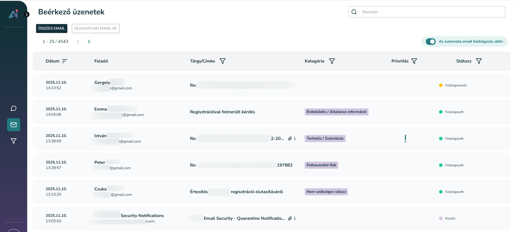

Aimee email kezelő modul
Az Aimee automatikusan elvégzi az emailek priorizálást, kategórizálásás és előkészíti a válaszokat. Az intuitív felületnek köszönhetően könnyen átláthatóvá teszi a további teendőket. Az Aimee által előzetesen feldolgozott emaileket kiküldés előtt már csak át kell nézni, illetve csak azokkal kell manuálisan foglalkozni, amelyek valóban odafigyelést és szakértelmet igényelnek.
Tudásbázis kezelés és integráció
Mindennek az alapja egy feldolgozásra optimalizált, jól felépített tudásbázis. Az AI-lekérdezésre optimalizált rendszer a magyar nyelvet kiválóan kezeli, könnyen bővíthető, és többféle kommunikációs interfészen elérhető (pl. chat, beépülő modul). A válaszok forrásai pontosan megjelölhetők. Háttérrendszeri hívások érhetők el API-n keresztül, feladatok összegyűjtése email alapján, végrehajtás, feldolgozási eredési és jóváhagyási pontok. Aktív fejlesztés az ügyféligények folyamatos gyűjtésével és beépítésével. A legújabb technológiák és a gyorsan változó trendek követése versenyképes megoldásokat biztosít.

Kategorizálás és priorizálás
Automatikus besorolás kulcsszavak, a kommunikáció stílusa és az ügyfél érzelmeinek elemzésével. Azonnal felméri a sürgősséget és egyéni szabályok is beépíthetők. Ráépíthető backoffice folyamatok, feladatok automatikus kiosztása, többszintű felhasználható admin felület és statisztikák.
Automatikus válaszok
A tudásbázisra és háttérrendszeri integrációra épülő automatikus válaszadás. Az ügyintéző készen kapja a válasz opciókat, melyet módosíthat és egyetlen gombnyomással elküldhet. Az AI értékeli a saját válaszát és bizonyos érték felett automatikusan kiküldi. Előkészíti a szükséges háttérhívásokat is, melyeket az ügyintéző egy gombnyomással lefuttathat. A visszajelzés alapján a válasz újratanulása. Csatolmányok feldolgozása, az abban lévő adatok is bővítik a kontextust.